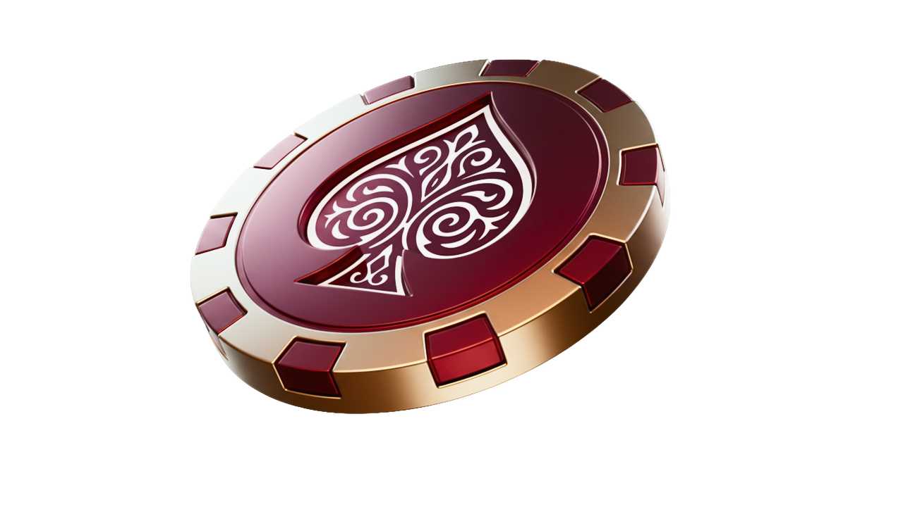
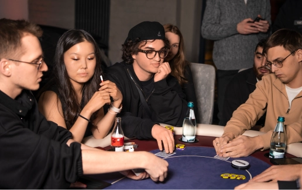
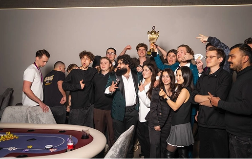

ЭТАП 01
Знакомство с игрой
Новичкам объясняют правила перед игрой. Дилер ведёт раздачу и помогает с порядком действий за столом.
Место, где встречаются за игрой
Покерные вечера, новые знакомства и разговоры за одним столом.
Узнать о вечере ↗

Здесь важны не только карты. Важно, с кем вы окажетесь за столом.

MAGNUM — клуб спортивного покера в Москве. За столом встречаются те, кто играет давно, и те, кто только начинает. Вечер складывается из партии, общения и атмосферы места.
От первого знакомства с правилами до последней раздачи. Выберите этап, чтобы увидеть подробности.
Новичкам объясняют правила перед игрой. Дилер ведёт раздачу и помогает с порядком действий за столом.
Приходите
за игрой.
Оставайтесь
за компанией.
Фотографии из материалов клуба. Без постановочных экранов и вымышленных участников.
Москва · Дизайн-завод «Флакон»
Контакты и запись в этой реконструкции не подключены. Оригинальный интерфейс и доступные точки записи показаны в архивном видео кейса.
Вернуться к началу ↑